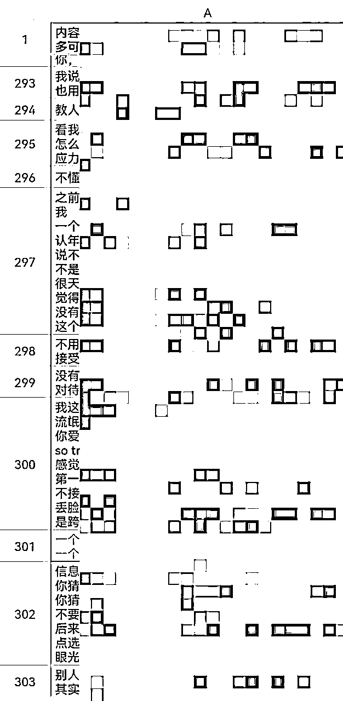

来源：https://j7329dxmbu.feishu.cn/docx/RmGidmCRcoQEJ6xre2Zcm9UqnXd
大家好，我是赵立心（原名AI君），95后，前大厂产品经理，做个人IP两年，裸辞一年半，目前是一名职场个人IP孵化教练。
一开始做IP的时候，我是无资源无背景，没有业余的自媒体账号，微信好友仅1000人，半年不发朋友圈的小透明。
到上个月的时候，我实现了靠3000私域好友、1000粉公众号和4000粉小红书，半个月被动变现近六位数的净收入。基本都是一两个月从认识到转化，也几乎没有什么沟通。
这种模式对于一个普通职场人来说是非常舒服的，不需要维护太多好友和产品，不需要做太多的销售转化沟通，也不需要搭建和管理团队，一个人的时间精力就能搞得定。
这是我做个人IP两年，微信端的变化情况。
这是转化过程，基本上都是不聊，对方来找我直接打五位数，甚至有很多没说过话直接来打钱的。
最近还发现有很多人组团来围观我朋友圈，转发我的文案，甚至有教育机构的朋友来研究我做案例。
成绩和各位大佬比不值一提，但作为一个自己拿到重大变现突破的普通职场人，以及一个帮助过诸多职场人实现副业变现五位数的个人IP孵化教练，我的历程和经验，或许对大家有一些借鉴和参考。
这篇文章就想和大家详细分享一下《普通职场人，如何跑通个人IP，实现副业变现五位数》，具体包括——
1、职场遇到瓶颈和迷茫，如何确认未来发展方向，找到自己的优势和竞争力？
2、为什么学了诸多课程却没有真的改变？职场人做IP的特殊性和必须考虑的问题
3、如何打造一个自身自洽，能同时实现自我价值和商业变现的个人IP模式？
4、如何通过私域内容、转化设计、自媒体打造，实现变现飞跃，超过主业收入？
5、职场人转型路上有哪些常见的问题？该如何解决卡点、保障效果？
在聊方法论之前，我们值得先分析一下这个困局，并借此说清一件事情：大部分人面临的职场困局，不是个体能力问题，而是大环境的共性问题。它也不是简单的换工作能解决的问题。
正确归因很重要，如果你不清晰自己面对的情况是哪里出了问题，一直在原地打转，那么这个困局就很难被改变。
职场人现在的困境有很多。
我是2019年毕业进入某互联网大厂做产品经理的。
开始的时候其实还挺满意，但做了一年之后，就发现业务上的成长开始变的缓慢，想做出新的大成绩很难，想要实现职场的快速升职加薪更难。
没有那么多新业务可以接触，也没有那么多可以增长的项目能去做，能做的只是一些修修补补，也看不到什么效果。大部分的工作是写文档、开会、各部门撕逼沟通，日复一日，周而复始。
中间曾经尝试过去换岗、换公司、换职位，但都会重复进入某个周期性的循环。只有开始的一段时间有新鲜劲，一旦过去，就会重新陷入迷茫。
甚至很多时候去所谓创新业务，就面试聊的那几分钟，就能够看透那层披着创新外衣的不变的模式，能够让人快速失去兴趣，看到苍白的同样的未来。
在我给大家做IP孵化、和更多人聊过之后，也发现，这不是存在于我个人身上的问题，甚至不是某个公司的问题。在大厂的大多数人都有类似的感受，它已经成为了一种行业的大趋势。
当大环境不再有增量，只剩下了竞争日益白热化的内卷，一切都要去抢资源，你就要靠赢过别人才能获得位置。
自己努力了半天的事情看不到成绩，但一个平台资源、一个外部事件，kpi立马达成。
在公司会能做出动辄几千dau、上亿营收的成绩，但是内心却很慌，离开平台的光环，自己究竟还剩什么？
做的事情感觉谁都能做、身边同事甚至后来者都很厉害，自己的竞争力和价值究竟是什么？是不是随便一个应届生都能替代？
每天下班总是感觉很累，但一回想，又感觉今天没干什么正经事，没什么产出和成长。
每次写周报月报年终总结都很慌，看到身边其他人的成长也很慌，总觉得自己好像虚度了光阴，落在了别人后面。
不想入睡，不想干事，只想颓废刷手机，觉得收获并不满足，也并没有真正属于自己的时间。一天大部分的精力没有用在有效的产出，而是情绪性的自我内耗。
在公司，接触不到真实用户，感觉不到事情的意义和价值。无法收到认可和赞同，正向反馈很少。自己能够获得的东西也越来越少，也越来越迷茫，看不到前景和方向。
这些并不是因为单个的公司和领导不好，而是他们普遍面临的压力也很大，他们也很焦虑，整个行业都很难找到能增长的大项目了。
但是，大增长没有，局部小红利一直存在，小而美一直有机会。
面临裁员、年龄渐长、增长乏力，给自己储备另一条路的危机感日趋强烈。
想要追求复利高成长，想要实现自我价值和认同，不想只是一直处于工作谋生、不开心的状态。
但是，大部分人是真的焦虑又没有办法。
工作也没几年，自己的方向都没搞清楚，本职工作都还没做好，我真的有优势吗？
工作了不少年，除了自己的本职工作，其他的什么都不会，我还能做什么？
工作每天这么忙，还要经常加班，抽不出时间和精力去做其他的事情。
缺乏正确的方向和思路，总是做了几下，看不到效果，一忙起来就放弃了，一直没有实质性的改变。
家庭压力和经济负担大，不敢轻易放弃原有职业，尴尬的卡在那里，进退两难。
这都是我在做职场IP孵化的过程中收到的大家的真实问题。进入一个新领域，确实很难。但是，有正确的方法，也真的可以让他们变得更容易实现一些。
我自己是在职的情况下开始做副业探索，一个月实现成功变现，半年跑通模式后裸辞，一年跑通小红书、视频号、私域等几个端口，实现单日变现五位数，逐渐打平原有主业收入。
我孵化的学员里面，实现一个月内完全从0生造定位和变现、几个月实现副业变现五位数的，也不在少数。
里面有很多方法论是普适的。下面就给大家详细的聊聊，整体的思路，以及一些细节的操作。
先说结论：
① 破解迷茫，打碎瓶颈，不需要一直尝试新路子，而是停下来思考，清楚定义自己想要的是什么
② 构建竞争力，单纯的换方向、转型、做斜杠都没有用，真正的重点是从过往经历中挖掘你独有的个人特质
第一步，打开视野，接触足够多的项目和方向
很多人，包括一开始的我，会感觉要脱离公司独立赚钱我是做不到的，因为有一个很大的误区——把这件事情想的太大了。
如果觉得，它一定是要创业，要做大项目，想起来就会很畏难。因为这种事情成本高、周期长、距离我们也太远了，
如果觉得，现在不像前十年的大环境那么有红利了，互联网的红利也慢慢消失了，父辈们大V们的成功路径不可复制，就会觉得我们没有机会，前途一片昏暗。
但是我们今天去看，会发现有很多其实很小的切点可以去做。
没有路可走，是因为你没看到，有这些方向存在，你也没看到那些和你差不多的人，真真实实做成了。
你一定要去找一些大圈子，认识一些高手，以及最重要的，找到一些和你经历差不多、但是做成了的人。他们会让你看到自己可以走的路径。
起步阶段，我专门花了一些时间去了解，对于市面上现在大概有哪些比较好的项目，情况是什么样做到心中有数。
同时去链接自己相关的优秀圈友，去近距离交流，看看他们怎么做成的，深度了解和学习。
我建议大家也可以去这么做。
对于普通人来说，不需要一下子想那么多，也不需要那么多的时代机遇。想发财或许很难，但想赚钱，想拿到结果，真的不难。
就是找到一个自己可以做的小方向，踏踏实实一点点去做。
第二步，收敛方向，确认自己要做的，重点关注的
到一定阶段之后，如果还是大幅去不断摄入信息，你就会越来越迷茫。
这个时候需要做筛选，定几个自己核心的关注，真正下场去试，以及，跟住几个人去近身学习。
如果做一个项目，你觉得你卡住了，你觉得不太舒服，去总结一下为什么。
对于大部分职场人来说，也包括我自己，核心可以用三条标准来做判断——
（1）试错成本低，前期投入小，能快速做验证
在职状态下，一定要控制风险和成本。
大部分人没有那么多的时间、金钱能投入，可能也没有办法坚持特别多时间看不到结果。
如果你上来就去做一个开发软件、实物产品投入市场，肯定等不到。
需要的是可以低成本试错，不需要前期太大投入的项目。
（2）雪道足够长，能积攒长期复利，抗周期，不容易饿死
如果每次都从0开始，每次都从起跑线出发，这样自己的损耗太大了，收入、各方面，都没有办法持续上升。
有很多大佬，是可以打快，很迅速的把一个项目落地执行赚到钱的，但其实大部分人是做不到的，包括我自己觉得我也是做不到的。
对于普通人来说，没有那么多资源和时间可以反复起盘，也没有那种能力。找一个有复利积累、能持续的方向，是最靠谱以及舒服的。
这就需要这个行业的天花板比较高，没有那么容易因为一些外部原因行业整个不见了。也需要它和你本身有足够多的链接，即使没做出来，仍然对你的职业发展有用，不浪费时间。
（3）符合个人需求和优势，灵活性强，有竞争力
最终如果想在某个领域做的很好，想真的获得足够的收入和资源，一定要能成为这个领域的top。
可能是这件事情，你做只需要10分钟，而别人需要30分钟。
可能是这件事情，你能很容易坚持下来，但是别人并不愿意去做。
这样，你才有可能真的在这个领域干出来。
我当时是综合了这些考量，和市面上的情况，最终选择了个人IP这条路。
它不需要投入实际成本就能尝试。就算做不出来，它也能帮我建立资源人脉，不会亏本。它还能让我一直不换赛道，因为经营我这个人，让别人信任和愿意帮我，是一定什么时候都需要的高价值动作。
我在帮助大家做孵化的过程中，也发现这是一条很稳的道路。就算你不想脱离职场，过程中建立的影响力、提升的内容能力，也能反哺你的职业生涯，不会让你很难受。
开始做副业、做IP阶段，很多人都会说，我好像手上什么都没有，我要怎么开始？
我自己当时也有遇到这个问题。我觉得自己真的太普通了，身边优秀的人那么多，找不到自己的竞争力和壁垒。
而且，那些市场比较认同的能力我都能弱，沟通表达能力不好，没有什么资源背景，连微信好友都很少，在职场上我做的也不是很突出。
这种情况，其实当时很多人都不是很看好我，觉得我并不符合一个“会成功的模型”。我的很多学员也面临同样的问题。但是，最后我们都跑出来了。
其实，做出成绩并没有一个固定的模型。这个时代很内卷，压力很大，但它又很宽容。只要正确的努力，你总能找到属于自己的方向。
一个有效的定位，一定是有自己的优势擅长，和对市场有价值的结合。
价值无非是实用价值和情绪价值两种。前者要向外去找功利性特质，后者要向内去找性格特质内核。
以一位我孵化的学员、某大厂程序员为例
梳理之后我们缝合了她的定位、价值和完整的故事：
第一，面对大城市的压力和大厂的内卷，没有生活质量，放弃北漂，回二线城市发展。
如何给自己做未来的职业规划？是否该选择回家乡发展？
在家乡，我该如何找到合适的工作？保持自己的薪资和竞争力？
转型期，如何克服心理障碍，调整状态，说服自己？
第二，一个普通小镇女孩，用自己不断争取、不放弃的勇气，与生活和大环境的压力抗争，为自己争取到想要的生活。
不满足于小镇平庸生活的她，勇敢选择走出小镇，进入互联网大厂。在大厂内卷、裁员，在北京无法适应，她又勇敢追随了自己的内心，选择回到二线城市。
在面对生病、裁员、孤独、无助，她从没有放弃自己的热爱，放弃好好生活。去参加各种活动，去逛吃，去玩耍，去挑战极限运动，她活出了自己的精彩。
并且，她很愿意把自己的这些经历去分享给别人，让更多人生活的更好。
在我们一起去梳理这个东西之前，她一直和我说，觉得自己太普通了，没什么可以说的。
但是，梳理之后，就会发现有很多点是非常有价值也非常打动人的，一个完整立体的形象跃然纸上。
而且，这套东西，没有第二个人能和她一样，能和她竞争。
做个人IP有一个巨大的误区，就是一定要多么厉害的成绩，我年薪100万了，我获得了一个国际性奖项，我才有的说。
其实不是的，很多小点背后的能量是巨大的。牛人的故事我们羡慕，但离得太远。越是普通人的故事，越能打动人。
而且很多时候，你认为的小点，在别人看来，并不小。
前几天亦仁老板提了一个问题，是考上985难，还是一年赚100万难。大家的答案不一。
对于我一个觉得很容易就考上了985的人来说，我自然觉得是100万难，并且觉得985很平常，没什么可说的。
但是换一个群体，大家的看法会完全不一样。很多老板都觉得，100万简单，985难。
觉得找优势、找竞争力难，是因为企图去找能比任何人做得都好的事情，这确实太难了。
其实，只需要找相对优势、找小圈子内能比大部分人做得好的就够了，然后把它磨成绝对优势，以及通过有效的机制组合，让它更耀眼。
酒香也怕巷子深，找到优势、挖掘完故事和特质之后，最重要的，还是让别人感受到和认可这些东西。
你能多么突出和显化这件事情，你的IP就会有多大价值、有多大的影响力。
我们还是以刚才的程序媛为例，来继续做设计
给大家看看最后展示出来的效果，以我的朋友圈打造为例。

大厂裸辞、自媒体体现出我的经历和特长。点燃自己照亮他人，做喜欢的事儿，体现内在特质和能量。
个人IP、自媒体系列的文章和拆解体现专业性。生活经历，和观点，展示故事和理念。每天打卡的朋友圈内容是一个记忆锚点。
很多细节点位，组成了最后的认可和高额付费。很多人说不知不觉会被吸引，就觉得发的挺好。其实，一定是背后的思路和设计做的足够清晰了。外行看热闹，内行学门道。
如果你只是随性发，也会有效果，会有人认同你，但他们不知道怎么给你付钱，也不知道你是干什么的，效率很低，也带不来真的改变。但如果有成型的梳理和打造，就会不一样。
比如对于我这位学员，我们设计了清晰的定位之后，她就开始有序构建自己的IP，展示自己的经历和经验，小红书、朋友圈、咨询、社群，各项都很快有了进展。
她说现在感觉自己状态好了很多，自信了很多，发现原来自己的经历能帮助到这么多人。这其实就是我们每个人都能做到的事情。
另外记忆锚点这一项，想特别说道几句，是我实战中，效果最强最好的方式。因为出现的频率足够高，足够精准，它能让人快速记住你和你干的事儿。
比如朋友圈打卡系列就是非常常见普适的，我给很多学员都设计了配套的内容。可以几乎达到两周从0建立强认知的强心剂效果。
我自己最早就是在朋友圈做了一个30天读完30本书的打卡。每天早上花2个小时，读完一本书，在朋友圈发自己的读书笔记和阅读音频。做了第一个星期，实现通过了一个陪伴社群获得第一笔变现。第一个月成功推出了自己的高效阅读课程。
还有我的公众号日更，已经做了差不多800天，几乎每个我的微信好友都会对这件事情和我的领域有印象。
我做的IP案例系列、IP百问系列、大厂转型系列，很多一篇就几十阅读，但每个月都能给我带来五位数的直接转化变现和数不尽的信任加强。
再比如给我的学员设计的，每日运动打卡，再配套人设形象的设计，从0开始发这个领域的内容，两周她就收到了变现。
还有诸如此类的，做菜打卡、视频更新打卡，等等。
同样的，设计是最重要的。我身边很多人看我做公众号日更，也会学我做这个，但远远没有我的效果好。
这个东西一定不是要做个打卡本身，也不是写专业本身，而是要结合人设和形象打造来做。
先说结论：
① 做IP很复杂、自己很难搞定，想要赚到钱，你必须要打造一个完整的IP闭环，同时做好产品、流量、转化三端
② 做职场IP更加难以坚持下去，和纯粹的自媒体IP打造不同，有很多的特殊性，想要看到效果，必须兼顾时间精力的问题、风险的问题、接受程度的问题、自我价值实现的问题
新手做个人IP的五大坑：先持续发内容。先把自媒体账号做起来。先把课程、产品做出来。先考个证、把知识学会。先花钱招人、搭团队。
任何没有正向roi的商业模式和通畅变现链路的做IP，都纯属耍流氓。
做个人IP，没有背后的潜伏期，每一个动作，都能帮你建立信任和获取商业价值。
做个人IP，不需要前期招任何人，一个人就能跑成一个公司。
不过，前提都是，把模式设计好。
这里需要回答四个问题——
（1）你的用户是谁？
（2）你如何认识你的用户？
（3）你如何获得用户的信任？
（4）你如何让用户为你付费？
每个问题，市面上都有无数成型的答案，和成型的链路。
但是我想说一个反常识的事儿：很有可能大部分成型链路你都做不出来。
比如传统微商的玩法是，大量参加活动、认识人，大量加群加好友，群发、私聊、不断加深关系来转化。
但是对于我，社交、聊天，绝对是我不擅长的，我能做到及格，但是拿去和别人竞争就太弱了。和很多很爱聊的销售去学的话，我就是做不到他们那样。
而且一个一个去聊，我觉得太浪费时间，效率也比较低。时间全陷入在碎片化的应付各种人和信息，也完全没有做自由职业的幸福感。
如果你是一个成型的商业团队，那么你只需要学策略，去执行，就够了，你有足够多的人手和时间，你也总能找到能落地的人。
但是如果你是一个个体商业，一个个人IP，尤其还在职，你一定要考虑自己的接受能力和特质。
所以我给自己定的模式是，靠内容吸引人，靠价值混圈子，靠能量做成交。用被动成交的方式，不靠主动聊天做销售。
我不想一直说话和人聊，但我可以让其他的东西替我说话。我只用说一次，就可以不停有人听到。
基于这个理念，我的被动成交链路就是：用内容做获客，用产品做信任，用活动做转化。
所以我最近成交的几个五位数用户，他们的典型路径是这样的。
用户A
认识：4月，一次线下分享加了我好友
信任：持续关注我的公众号和朋友圈内容
转化：5月，再次参加我的线下分享，活动第二天直接打款
从认识到转化过程中，一句话没有单独说过
用户B
认识：4月，一次社群分享加了我好友
信任：持续关注我的公众号和朋友圈内容
转化：4月，看到我某篇文章后被打动，直接打款
从认识到转化过程中，除加好友时的自我介绍，没有任何其他沟通
用户C
认识：3月，一次线下活动，加好友
信任：当天加入我的社群，之后每天看我的分享，积极互动
转化：4月，一次社群分享后私聊，直接打款
从认识到转化过程中，只有线下活动时聊过几句，转化前推了几句
我成交的所有用户，都遵循这样的三级路径
第一次认识：通过内容，包括线上线下的分享，公众号和小红书的内容。用他们感兴趣的话题、我的自身经历故事，吸引相关用户来主动认识我。
建立信任和关注：通过朋友圈和公众号内容的持续关注，或者买我的一些小产品。通过系列连载，解决一些独立小问题，让他们持续关注。
完成转化：直播/线下活动/发售/促单等活动。塑造场域能量来成交。
这三级路径是没有一般做销售而言的挖掘需求-成交转化的路径的，都是通过内容和活动，来促进进程。这样效率会很高，也会做的很舒服。
做IP是很个性化的事情，没有那么多定式成法要去遵循，怎么效果最好就怎么来。
在给学员们做孵化的时候也是一样的。如果对方擅长讲，就极致让他用讲去做三级链路。如果对方擅长写，就极致让他用写来做三级链路。
这里面首先是要去对标市场上同领域其他人的做法，看看究竟有哪些可用的商业模式，其次是从里面去挑选适合的。
有两条标准——
第一，对方和你的经历、特质类似。这个时候相当于你重复模仿他的路，大概率能拿到结果。如果是和你相差太大的，很可能你发现他做的都是对的，但是你就是学不会。
第二，自己内心不反感。比如对于很多人来说，就是很烦群发、私信骚扰这些东西，那你就不要去选这种路子的，一定要自己自洽。
职场人做IP，和普通的商业自媒体IP，有一些不同。
真正要跑出来，必须要考虑好四个问题——
职场人做IP，不一定是纯粹为了更高的变现，还可以用来在行业里建立名声影响力，用来转行换工作，以及给自己储备第二曲线和资源人脉。
对于大部分人职场人来说，由于时间精力经验各方面的问题，起步阶段会非常难，另起炉灶开一个新领域更是难上加难。
所以我给大家设计方案的时候，一定会贴着他们原有的领域做延展。
要不是工作上的延展，要不是业余兴趣爱好的延展，要不然是所学所思的延展。
最大程度的和他们本来就在做的事情结合，一方面能互相反哺，比如促进对工作的更好理解，促进自己的学习成长。
同时，也避免几个不相干的事情牵扯时间精力太多，做不过来。
这样压力就会小很多，更容易成。
很多人会说，听了很多大佬的分享，学了很多的东西，但还是不知道做什么，还是很迷茫。
有个特别重要的东西是阶段。
比如我前几天给一个学员做咨询，她的擅长是情感，她说她和一个大V聊，对方建议她做小三问题、资产分离这些，她一下凌乱了，不知道自己该做什么了。
我说那个老师说的没错，情感领域做这些确实很赚钱很吃香，但是她可能不太适合你现在，你还没有处理这些问题的经验，你的性格也决定了你做这些东西会不舒服。
对于她现在来说，就是踏踏实实做好自己能做的部分，去给别人分享自己的情感经验，帮别人进入关系，是最稳定可以获得成就感和见到效果的道路。
你发现很多时候你问的人越多越焦虑，尤其是那些不了解你只了解市场的人，他们会告诉你，做xx方向很好。
是的，方向确实很好，但你会一下子失去动力，因为这个路离你好远，让你觉得遥不可及，无法做到。
好方向固然重要，但是找到适合自己当前阶段的路，能一步一步看到结果，才有可能真的走到目标中的地方。
一口吃不成一个胖子，比大方向更重要的是，对于当前阶段你究竟要干什么。
你现在到底是先开始做一个小红书，先做一个产品，还是先打造一个自己的IP形象。
把思路理清楚，每次就关注一个重点，拿到结果，再搞下一个。你会慢慢发现，你的改变很快。
尤其职场人的时间精力非常非常有限，但是做一个IP需要产品、流量、转化三端并行，一个特别重要的事情，就是一定要把所有的事情划分好阶段。
每一次都要戳到那个能看到效果的地方，没有那么多时间来回瞎试。
对于职场人来讲，必须要控制ROI。因为他们能投入的时间精力金钱都非常有限。
比如有个学员说，想做自己的实物品牌。可能是个好方向，但对于在职的人来说，绝对不适合。前期需要的投入各方面都太高了，对于职场人的情况99%会做不出来。
我给职场人做方案，都会选普适保险、高概率、低成本的设计。
就算这样出结果稍微慢点，也一定是这样的设计方案对他们的实际效果更好。
除了赚钱，很多职场人做IP，会很在意是不是自洽，是不是喜欢的事、有意义的事。
有可能这个方向很好，但是你没有兴趣，你不想做，那么效果也不会好。
对于职场人来说，他们想要自己做IP，往往有很大因素是职场上给不了他们自我实现、做自己想做的事情的空间。
如果做IP仍然用只奔着赚钱这样的方式去做，就会和职场工作毫无区别，没有意思。
所以它就要求你能够了解和尊重自己的喜好。我们在整个做方案的过程中，也会花很多的时间去仔细了解对方，和对方打磨方向、具体的内容。
如果不考虑这些情况，只是单纯去模仿市面成型商业模式的做法，去学习惯有通用的方式，那么你可能会成为一个IP学者，理论知识丰富，但很难真正做成自己的职场IP。
基于上述分析的这些特性，在职场人做IP的时候，可以这样来做各端的搭建。
产品有几种典型——
（注：所有得分均为对一般职场人而言的普遍情况，单项分数越高，说明该项的匹配度越高，简单来说得分越高越好）
| 得分情况 | 成本低 | 接受度高 | 利润高 | IP感强 |
|---|---|---|---|---|
| 自产实物产品 | 1 | 2 | 2 | 2 |
| 代销实物产品 | 3 | 3 | 1 | 1 |
| 自产虚拟产品 | 2 | 1 | 3 | 3 |
| 代销虚拟产品 | 3 | 2 | 2 | 2 |
每个大类别下面也有很多具体的种类，比如自产虚拟产品的一些典型——
| 得分情况 | 利润高 | 容量大 | 运营成本低 | 尝试成本低 |
|---|---|---|---|---|
| 单次咨询 | 2 | 1 | 3 | 2 |
| 社群会员 | 1 | 3 | 1 | 3 |
| 课程/训练营 | 2 | 2 | 2 | 3 |
| 陪跑服务 | 3 | 1 | 3 | 1 |
如何选择适合的产品？要考虑三个问题——
第一、对于不同的人来说，有不同的适合自己的产品。
比如有些学员IP能力很强，即使做代销实物产品，也能建立自己的IP感，能把这项分数补上，整体得分极高。
比如有些学员自己的爱好就是学习上课，对于买东西不感兴趣，也不喜欢把自己用的东西推荐给别人，那么虽然实物产品的大众接受度更高，但对于他来说，就未必是最适合他卖的产品。
再到具体的产品，比如，如果你更喜欢和小圈子深度交流，面对太多人会有压力和不舒适，你就更适合小容量和低运营成本的产品，做陪跑就更适合。
第二、对于不同的领域来说，有不同的适合的产品。
比如你做美妆领域，实物产品和虚拟产品都可以。
但如果你做时间管理这种领域，实物产品就要比虚拟产品差很多。
领域上面如果不匹配，做起来就会非常吃力。
第三、对于不同的阶段，有不同的适合的产品。
比如对于一个在职职场人，你刚起步这个新领域，经验不足，你也不确定自己的方向对不对，你的时间精力也不足，这个时候你就不适合直接做成本很高的产品，而更适合做轻产品。
再比如对于做到一定阶段的时候，你大概率不再只销售单一产品，而是做产品矩阵化的设计，多项协同或互补。
产品的选择是个人特质和领域的一部分，有效的产品设计，能够完美融入到你的IP形象当中。
比如我自己就是更适合陪跑这种产品的。我就会在讲我做陪跑产品的时候，我会展示我小圈子深度交流的特质，我也会讲想要真正做成IP就是更需要陪跑服务这种更针对性、更长期的产品，这样整个就会更协调统一，也更可信。
再比如我学员做实物产品的代销，我就会给她设计，要突出自己热情、喜欢给别人介绍好用产品、乐于助人的这些特点。
这样做出来的产品和矩阵产品，一定能让你的个人IP打造和变现效果都实现最大化。
典型的几个主流平台——
| 主要粉丝特征 | 普通人起量容易 | 容易获得大流量 | 制作成本低 | 容易获得高信任度 | |
|---|---|---|---|---|---|
| 小红书 | 一二线年轻女白领 | 4 | 3 | 4 | 2 |
| 视频号 | 亲朋好友 | 3 | 3 | 2 | 4 |
| 抖音 | 一二线潮男潮女 | 2 | 4 | 2 | 2 |
| 公众号 | 亲朋好友，二级人脉 | 1 | 1 | 3 | 3 |
| B站 | 二次元，宅男，大学生 | 1 | 2 | 1 | 2 |
| 知乎 | 中年男性，知识型 | 1 | 2 | 3 | 1 |
| 快手 | 小镇亲朋好友 | 2 | 3 | 2 | 3 |
| 微博 | 一二线年轻潮女 | 2 | 2 | 4 | 1 |
如何选择最适合的平台？需要考虑五个因素——
第一，你的个人特质
比如你是一二线城市女性，那么做同群体的小红书，会更容易，做下沉的快手，你可能会get不到点。
第二，你的目标群体
比如，你做一二线城市潮男潮女的生意，那么你去抖音小红书做，很好，做快手就会不那么合适。
第三，你所在的领域
比如，如果是做娱乐赛道，抖音很适合，但如果是做学习成长，它就很难。
第四，你拥有的技能
比如，你的镜头表现力和剪辑如果很差，你做视频，做抖快视频号可能就会很吃力。
再比如，你的逻辑能力很强，善于写长文，那知乎和公众号可能就会适合你。
第五，你的时间状况
自媒体，一定是有量才行的，所以时间成本这条一定要考虑进去。
整体来说，职场人，除非你长的很漂亮或者很幽默，你能够在不了解平台规则、专业能力和镜头表现力也不足够的情况下让人愿意看你、听你说话，其他人我都会建议先做小红书图文开始。
你花一周时间剪出来一条视频，一个月才能发四条，一旦数据不好很容易坚持不下去。
但同样一个月，我做小红书图文，可以发30篇，能更快摸到流量的命门。
转化端需要两个要素：触点+成交点。
触点是加深信任的契机，成交点是最后成交转化的那一下。
典型的触点包括——
| 得分情况 | 成本低 | 信任增进多 | 有效触达人数多 |
|---|---|---|---|
| 朋友圈 | 4 | 2 | 2 |
| 社群 | 2 | 2 | 2 |
| 课程 | 2 | 2 | 2 |
| 公众号 | 4 | 2 | 3 |
| 视频号 | 3 | 2 | 3 |
| 公域自媒体 | 3 | 1 | 4 |
| 1v1微信私聊 | 2 | 3 | 1 |
| 群发 | 3 | 1 | 3 |
| 线下约见 | 1 | 4 | 1 |
| 线下演讲分享 | 1 | 3 | 2 |
典型的成交点包括——
| 得分情况 | 成本低 | 成交概率高 | 有效触达人数多 |
|---|---|---|---|
| 朋友圈促单 | 4 | 2 | 2 |
| 社群发售 | 3 | 3 | 2 |
| 直播发售 | 3 | 3 | 3 |
| 线下发售 | 2 | 3 | 2 |
| 自媒体广告 | 4 | 1 | 3 |
| 1v1微信私聊 | 2 | 4 | 1 |
| 群发广告 | 4 | 1 | 3 |
| 线下约见 | 1 | 4 | 1 |
需要考量的因素包括——
第一，你的个人特质
比如你是喜欢和人聊天的人，1v1场景可能会适合你。但如果你是和人私聊会压力比较大的类型，这种方式就不适合你。
第二，你的目标群体
比如群发这件事情，对于一二线高知年轻人来说，信任增进度可能是负的，甚至是一把出局，很多人看到会直接屏蔽、删好友，那么如果你是做这个群体，它的其他项得分再高也不适合。
第三，你的产品特质
如果是展示性效果性比较强的产品，比如化妆品，用视频类，或者线下，就显著比文字图片有优势。
第四，你拥有的技能
比如，你的线下演讲能力很强，那么直播、分享这种会比较适合你，但没有这种技能的人做起来就会很费劲。
第五，你的时间状况
同样的，成本考量一定是需要的，如果你没有那么多时间的情况下，一上来做高成本的方式一定不适合。
下面给大家分享几个我们的实操案例，来具体感受一下
很多人看我的历程，都觉得我发展的特别快。我比其他类似背景的朋友跑的快一些，最主要的，就是提前把思路都设计好了。
一件事儿，顺着链路来做。和你随随便便做了，再看怎么用，效果和效率都会是天壤之别。
整体的思路和方案设计，再看重都不为过。
整个核心其实要关注的就是三个东西——
第一，方向和整个商业模式，保证航行大方向不偏
第二，分端的重点操作细节，保证各环节的效果
第三，阶段性安排和Timeline，保证具体的执行和落地
私域是整个职场人做IP链路里极其重要且不可绕过的一部分。
当你没有流量，又要短时间快速起步，最好的方式一定是私域开始。
同时，不管你哪里获得流量，最终也仍然要回到私域来统一转化。
比如对于我来说，其实三级链路分的就没有那么清楚，很多时候获客、信任、转化是一次性做完的，对方看了我一些东西，或者听我讲了一些东西，认识我的当天直接打款五位数。
私域运营好了，能最大程度提升你变现、获取资源、获得信任的效率。
做内容的时候有几个常见问题——
第一，全是产品和广告的展示，很招人烦，直接被屏蔽。
第二，有专业性没态度，全是干货，对方觉得你很厉害，但是不想接近你。
第三，有态度没专业性，全是美图，对方喜欢看你内容，但是不给你花钱。
第四，既有态度也有专业性，但信任和转化的建立不够，周期很长、费劲。
要做一个高效转化的IP，内容上就需要四个要素——
但是这四个要素你如果全部都直接给，效果会很差，会觉得全是营销，和他没什么关系，很反感。
我简单总结了四句话，是我们一直在用的，可以比较快速的帮助大家生成吸引人又有转化效果的内容。尤其对于职场人这种工作生活比较丰富、又不想要过于直白做营销的人非常适合。
干货套故事
自拍配鸡汤
反馈聊情怀
促单上价值
下面我们以朋友圈这个主要战场为例，逐一来看一下。
朋友圈要提供实用价值，要展示专业性，但是如果光讲干货会很枯燥，内容也很容易会枯竭。
这时候就可以把自己的经历、或者是学员案例套进去作为论据支撑，一方面故事大家爱看，另外一方面也可以展示自己的成绩、增进大家的了解。
比如我这条讲怎么做个人IP的朋友圈，就是用“我发了一条其实不太完美的朋友圈，但是效果很好”的案例，来论证“做个人品牌，不需要完美”。
写这种圈的方法通常不是先写论点再找故事，而是先有一个有感触的故事，再从中总结论点。
道理就那么多，真正吸引人和稀缺的是案例和故事。
用经历，再去感染别人一遍，去让别人相信，那些大道理，真的可以实现。
提供情绪价值可以用自拍、美图，这类内容大家都喜欢看，但是没有记忆点，看过就过了，对于人设和变现的帮助就不大。
所以我一般会把情绪激励和美图美景放在一起，写一些自己的理念。
如果你有故事你就展开写，没有你就直接一句话就好了。
比如很简洁的多图+一句一语双关的话，展示一下自己的态度。
再比如通过一些个人故事来展示自己的理念。
要变现有一个很重要的部分是晒单秀肌肉，以及晒学员好评，但是这种东西很容易做成自卖自夸，自己说了半天觉得挺好，用户一点感知没有。
这个时候比较好的方式是，通过聊情怀、回忆过往，增强情绪感知，让大家参与到你是怎么一路走过来的，而不是好像只是甩个成绩去炫耀。
只有努力没有成绩，没人搭理。
只有成绩没有努力，招人嫉妒。
这不光是一种营销技法，我觉得也是很真诚的让大家看到，成绩不是天上掉下来的，它是怎么一步一步获得的。
比如我这条发我半月收入六位数+报喜的朋友圈，就是把之前遇到很多贵人但是自己年轻不懂的故事写出来，踩过很多坑，后来慢慢懂了，所以也逐渐有了更好的成绩。
写这种圈的重点就是，你要把你怎么做出来的写出来，尤其是一些心酸经历，更有共鸣。
变现的最后一环一定是促单，让大家买。
但是如果直接明晃晃促单，营销味很重，效果也不好。
我的通常方式是，通过塑造场景给价值，把痛点犹豫点写出来，非常有效。
比如我15号冲单的三条朋友圈，第一条针对的点是转化沟通费时间，第二条针对的是觉得贵，第三条针对的是细节做不到位，每一条都是一个1w多的单子，每一条就写透一个点。
这种圈的重点和难点也就在于你是不是足够了解用户和他们的场景，能不能真的写到别人心里去。
这些写法，之所以不是直接给，不是为了“忽悠和掩饰”，真正重要的在于，要把用户放在心上，而不是整天就想着我要发什么。
只想着自己怎么发，不想着对方愿不愿意看，那么必然对方不愿意看。
时刻记得，用户想看什么，我这条能给别人带来什么价值。
你用心对别人，你给别人提供价值，别人自然会回馈你。
内容布局设计好之后，通常还有两个问题。
第一是，没话题可写。这种需要日常去做积累。
我是自己会有一个素材库，平常想到什么可以写的内容，都会记录下来，现在已经300多条了。

这样就不会每次现想。现想灵感一定会枯竭，而且质量也一定没有办法保证。
记录下来之后，到每次要发的时候，我就从里面挑一个合适的，然后单独拿出一点时间来，在电脑上写好。
我自己的习惯是在电脑上写，然后再打到手机上，这样比较心静，质量会好一点。
第二，不知道怎么写，生产难度高。
（1）储备模版
每次都现写肯定会很难，尤其对于新手。比较好的降低成本的方式就是储备模版。
我自己有一个常用的模版，几乎上面各个类别都能套进去，也分享给大家。
就是“一句话核心论点+一个故事+一句总结升华”。
大家可以看我上面我发的这些条，都是符合这个模式的。
当你的素材和观点都足够多的时候，两个库一匹配，再总结一句话，一条朋友圈就完成了。
按照这个模式，能很轻松的写出无数条朋友圈。
（2）一次生产重复使用
我的内容，都是一份内容至少用四次，朋友圈、小红书、公众号、社群，大致的素材改一改形式直接用。
这里面主要就是建立好机制。各个平台的东西还是有些不一样的。朋友圈需要软内容，小红书需要硬价值，公众号和社群需要软硬结合。
比如对于写硬核干货类内容来说，最适合的机制是朋友圈-小红书-公众号-社群这么转，内容由短至长逐渐积累。
但如果你是写生活日常这种，适合的可能是小红书-朋友圈-社群-公众号，如果只是简单的把朋友圈内容转发，你发到小红书的数据肯定不会好，但是回转没有问题。
这个具体也要看自己的品类的情况。
（3）借鉴优秀内容
我会加很多朋友圈发的好的好友，以及参与一些相关付费课程。
这样你可以看他们朋友圈，直接截图保存一些写的好的，然后把他们的素材和板式拆出来到素材库，进行重新组合和二次创作。
自己想灵感总会枯竭，视角也会局限，这样都是现成的好内容，站在巨人的肩膀上。
仅仅靠朋友圈和公众号的内容做自然转化，整个的周期会比较长，也很容易出现对方关注着关注着就丢了的情况。
所以对于职场人做IP来讲，非常有必要通过设计一些低成本转化的策略，来提升转化效率。
这里给大家分享一套特别适合职场人的转化三板斧：分别从需求，从效果，从紧迫性入手，完成最后的转化动作。
一个核心的理念是：一个人愿意来找你认真咨询、好好回话，他就有90%的机率能给你付费。
成交需要专业+信任，愿意来找你咨询，其实同样需要有这两个要素。
如果是一个不太熟、信任度不够的人，你主动给他做咨询，对方都会爱搭不理的，何况还要他付出挺大的成本来找你问询。
这种主动过来的效率很高，因为不需要花费大量时间去找和沟通，对方配合的意愿很高。
所以这种认真来咨询的，我们就可以在过程中有效去抓他们的需求点，告诉他们我们可以怎么帮助到他们，帮他们打消疑虑，从而完成转化。
典型方式有两种——
第一，去提问，问他们有什么需求，遇到什么困难，看看他们找你的背后究竟是怎么想的。
第二，去讲述，讲自己或者学员类似情况下遇到的困难，看看他们的反应，哪里有共鸣。
只要你能抓住他们到底想要什么，你就能帮到他们，转化他们。
别人为你付费，有的时候不一定是因为真的某个具体的需求点能被你解决。
有的时候是一种感受，被你吸引，想成为你这样。这是很多高端品牌去打造的方向，我们做高单价也是一样的。
普通口红讲我不沾杯不掉色，普通香水讲我的味道多好，香奈儿花了2.7亿的广告讲什么？一男一女的浪漫邂逅，梦中的女神，美好梦幻的场景。用了香奈儿，你也会这样。
对于个人来说，最高级的广告就是你把自己活出来，把自己的IP打造出来，成为那个去吸引别人的人。通过场域，这种能量可以释放到最大。
比如，利用人多的场合做集中转化，让大家充分感知到能量和效果。
线下的活动，直播，群发售，都是很典型的这类场景。
简单来说，注意三个要点——
第一，展示自己的良好精神状态，感染大家。
第二，带动铁粉捧场和活跃，营造高能量的氛围。
第三，鼓励大家现场下单，带动观望人群。
其实很多人有购买意向，但总是有拖延的倾向。
我要开始改变，但是我再等等吧。
我要开始做小红书，但是我再等等吧。
等等总有千万个理由。但我们不能无限让大家等下去。
这个时候就可以通过一些传统的营销手段来做紧急性说明。
比如我的产品是定期会涨价的，而且大家知道不是假套路，是实实在在的涨价，不会回落，所以结合这种节点就会有比较好的营销手段。
那有了这么一套东西，我也不需要去做什么沟通，大家就会自己给我打钱啦。
这个过程，我觉得我始终坚持的、对我获得成绩帮助很大的一点就是，果断放弃自己不够擅长的东西，极致发挥自己的优势。
所有的路线都是在开始花了较多的时间去布局设计，真正好好研究怎么能最大化发挥自己的优势和特质。
在我给学员做孵化的时候通常也是，会先去了解他们每个人的特质，找到独属于他们自己的路， 再开始做后面的事情。
对于普通职场人来说，如果你不知道要做哪个平台，基本上闭眼入小红书是不会出错的。
不过做一个小红书博主，和做一个IP，操作上有比较大的区别。
我们最终的目标并不是成为一个自媒体网红，而是通过小红书来扩大自己的影响力、建立自己的个人IP、实现获客和变现效益的最大化。
我们的主平台也并不是小红书。所有的渠道来的东西，最终要沉淀为你的私域资产，重复给你带来价值。
小红书的定位，同样是和我们前面整体设计的IP特质保持一致。只不过对于不同自媒体平台来说，会有一些不太一样的侧重点。
首先，要贴合平台规则和人群特征，展示更容易带来效果的那一面。
其次，要结合两方的情况，制定最合适的展示形式和内容。
比如还是前面说的程序媛，她放在小红书的账号定位就是这样
（一）选题库的建立
（二）生产流程
对于职场人做IP来说，时间成本一定要极致降低，流程要极致规范化，避免无法执行下去的问题
第一步，结合市场情况和个人特色，确定一个70分的自己的内容模版。不需要效果最好，够用、普适、低成本为宜。
第二步，每周开始前，先确定选题和生产计划，避免每天花费过多时间找选题和临时变卦。
第三步，每天不带脑子的机械性完成生产动作。
第四步，每周完成数据复盘，迭代下周的选题、生产计划。
我自己是坚定觉得大厂呆不下去、想自己干的那类，这是适合我的性格的。
但不是所有人都适合创业，以及，真的想做好副业，和在职也真心没有特别大的冲突。
一般来说，等你真的做起来，有重大冲突点发生了，再辞职完全OK。
很多人想辞职是觉得自己没时间、太忙了，大部分时候，其实还是决心没到位。真正应该做的是快点行动，找人学习，而不是随便辞职。
如果你就实在想出来试，建议可以给自己定一个gap期限，有点压力，别只是一时意气觉得职场不好。
不吃学习的苦，思考的苦，行动的苦，就要吃结果的苦。
哪里都有哪里的苦，没有一条路好走，也没有苦可以少吃。
但是，我们有选择走哪条路的权利。
没时间是个伪命题。再忙你也能抽出时间来刷手机，想做的事情肯定找得到时间，只不过是优先级的问题。
坚持也是个伪命题。能坚持的事情一定是能获得正反馈，要不然你内心愉悦，要不然你能收到外部奖赏。
所以还是那件事，对于职场人做IP，一定要从挖掘个人特质做起，保证这事情你能干的下去。
此外，就是正确的做事情，设计好思路，特别重要。
如果方法思路不对，或者做得很随性，难看到效果，这件事情就会很难做的下去。
这个时候也可以自己寻找一些外部的监督和助力机制，找个老师来指导你、陪伴你，帮你走过难关。
同时，靠近高能量的人，高能量的圈子，尤其是和你类似的，激发自己的动能，也是个很常见的好办法。
很多人真的很急很急，我经常碰到有人在买我服务前一定要问，我做多久才能变现？甚至问我，从0开始几个月之后每天变现几千，怎么实现？
如果你这么想要结果，这么把这件事儿挂在心上，它很难。
但是如果你关注怎么做好，慢慢一点一点开始做，它又很简单。
下定决心，脚踏实地，不懂就问，不会就学，没有一个字很稀奇。
长期主义，也不需要你真的闷头干十年，只要你踏踏实实干一年，结果就会显现。
或许不一定每个人都能发大财，但赚到钱，和拿结果，真的没有那么难。
很多人都会担心，我发东西别人怎么看？尤其私域，都是熟人，更是不好意思。
我一开始也是这样的，每次发一个内容，都会措辞半天，想半天，到底怎么样。
其实这个只是因为环境改变了，规则不同了，我们没有适应而已。
在职场，谨小慎微、少说话不出错，能保你过的不太差，但是这样很压抑。
在外面做IP，它给你机会来释放你的天性，让你真正活出自己。虽然我们并不适应，但这不正是我们想要离开职场、追求的东西吗？
想通这一层之后，我使用了一些技术手段来过渡。从偏中立的内容开始发起，到慢慢开始真正打开和展示自己。
勇敢做自己的人会收到奖赏。当你发现，发了一阵子内容，有人告诉你，天天在看，很有收获的时候，你会认识不一样的自己，你也不会再害怕。
我一开始的时候，推产品心理压力会特别大。担心没有人买怎么办，担心别人把我看成营销的人，觉得不再是朋友的身份。
后来，担心流量的问题，担心初始的池子已经被消耗光，后面难以为继。
再后来，担心竞争激烈打不过同行的问题、担心高单价上不去的问题、担心后续发展的问题...
在做一件长期有价值的事情的道路上，困难从不会缺席，且必定一茬接着一茬。
道理都想的明白，但是人很多时候就是被一瞬间的情绪冲垮的。
怎么处理和面对失败，真的是影响最后结果的极其重要的一环。能最后做出来的不一定是最优秀的，但一定是放弃最晚的。
人都是脆弱的，不要太过相信自己一味去硬扛。一定要学会给自己建立一些支持系统，找一些导师和圈子。
2021年4月，我确定要走职场之外的第二曲线，完成方向探索，决心开始起步做个人IP。
第一个月，通过社群和课程，我第一次实现了成功变现。
半年的时间，跑通了模式，可以稳定变现四位数。
2021年底，借着给黄有璨老师做《运营之光3.0》助理的契机离职，正式成为自由职业者。
2022年年中，跑通小红书、视频号、私域等几个端口，实现单日变现五位数，逐渐打平原有主业收入。
2022年下半年，跑小红书矩阵号、接b端商单、带大家反复出小红书爆款，受邀给微软等公司员工进行培训。
到现在两年的时间，整个被动成交的模式转的比较顺畅了，收入也稳步提升。
做个人IP两年，很多人都说，我像变了一个人。
当我听到，很多我的学员、粉丝们告诉我，他们一直在关注我、特别认可我，我的东西，真的对他们产生了巨大的影响和改变，帮助他们走出人生低谷，他们觉得特别幸运能遇到的我时候。
当我看到，我的领域在越来越宽广，在IP和人群的逻辑下，我不再在具体行业的更迭和大环境的变动面前那么被动和束手无策。
当我认识到，我今天真的可以自己独立赚到钱，用自己想要的方式养活自己，我还可以和很多以前不敢想的大佬去谈合作谈生意。
我的自信、自我认同感，在一点点慢慢建立起来。我不再害怕未来可能的变化，我也开始敢于在认识人面前去展示自己、自我表达。
这样的状态，会去吸引人。我也真的很喜欢。
变得更好更自信，改善自己和身边人的生活状态，拥有说不的底气。这是我觉得，做个人IP对我来说，最大的意义吧。
它让我知道，不管你多普通，你在什么起点，你是否符合这个社会的刻板印象，一点一点做，一切皆有可能。
就像两年前我开始做的时候大家都不看好我，觉得哪里都做的不好，也过于平平无奇，看不到太多的潜能。
那时我还是一个半年都不发一条朋友圈，很抗拒自我展现和表露，写内容也很费劲的人，但现在我能一天发5条，公众号日更了快600天。
那时我是一个根本不懂用户、不懂商业，说出来的话经常会被人喷太专业、情商低、没有用户感，但现在我能在很短的时间和用户聊，去转化他们，靠私域被动成交六位数的人。
没有什么别的，就是哪里不会去找人学，哪里做不到就一点一点干，一关一关过。
过程中不断学习，不断请教，不断自我迭代，一步一步向前。
当前什么样子一点都不可怕，可怕的只有固步自封，不愿意改变。
普通如我可以，相信你也可以。
感谢大家的耐心收看，希望能对大家有所帮助，也希望看到更多优秀的朋友真的走通这条路。
整个IP打造、私域变现，细节的东西还蛮多的，由于篇幅有限这里可能没有办法把所有的东西都说的特别详细。大家如果有什么需要，也欢迎和我交流。微信：aijun20230504（添加请注明来源来意）